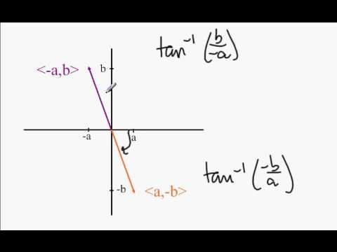

Los vectores en R2 son aquellos que están ubicados en un plano cartesiano de ejes X y Y. La magnitud de un vector también conocida como la Norma de un vector, es la distancia entre el punto inicial A y el punto final B, se representa como vector AB. Para hallar la magnitud de un vector debemos aplicar la siguiente formula:

Un ejemplo de la magnitud de un vector cuando su punto de partida es (0,0) :

Video complemento:
En el caso de que el punto de partida no es (0,0) se usa la siguiente formula:

Un ejemplo para hallar la magnitud un vector que no tiene punto de partida (0,0) es el siguiente vector AB:

Al aplicar la formula para este caso la ecuación se expresa de la siguiente manera:

Video complemento:
La dirección de un vector es la medida del ángulo que hace con una línea horizontal. La formula que se utiliza para hallar la dirección de un vector es la siguiente:
donde arcotangente es igual a y/x en terminos del plano cartesiano. Un ejemplo del calculo de la dirección del vector cuando el punto de partida del vector es (0,0) es el siguiente: Halle la dirección del vector (-3,-5): Como el vector se encuentra en el tercer cuadrante le sumamos 180 al resultado obtenido de la siguiente manera:

por lo tanto 239° es el resultado final. En el caso de que su punto de partida no sea (0,0) se halla con la siguiente formula:

donde ( x 1 , y 1 ) es el punto inicial y ( x 2 , y 2 ) es el punto terminal. Un ejemplo para hallar la dirección un vector que no tiene punto de partida (0,0) es el siguiente vector: Encuentre la dirección del vector cuyo punto inicial P está en (2,3) y punto final Q está en (5,8). Se aplica la formula así

por lo tanto al realizar las operaciones se obtiene como resultado

el siguiente paso es calcular el arcotangente de 5/3 así:

ya que los dos son positivos (5 en Y, 3 en X) se encuentra primer cuandrante su resultado final es 59°. Video complemento:
Video complemento: